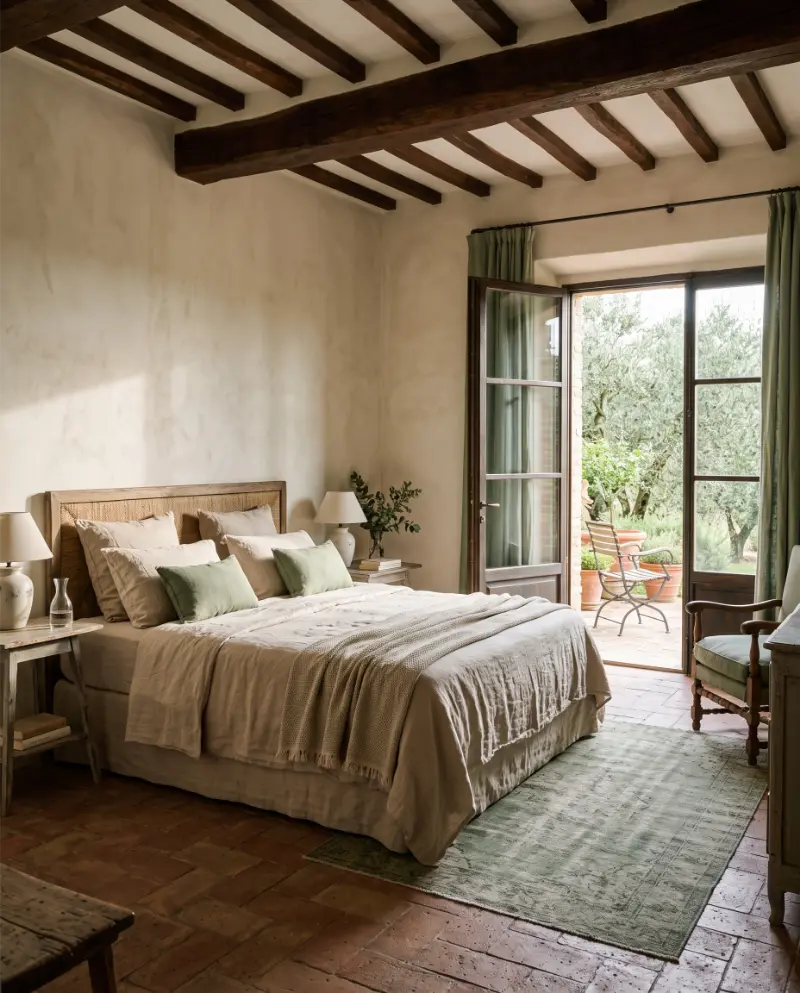

Piano Terra • Accesso GiardinoJunior Suite “Il Giardino”
Affacciata direttamente sul pergolato di rose bianche e sull'antico uliveto. Pavimenti in cotto antico cerato a mano, lenzuola in lino grezzo e doccia a pioggia scavata nel travertino toscano.
- 🌿 Patio privato con sdraio
- ☕ Macchina Nespresso e tisaneria
- 🚿 Doccia a vista in pietra locale
- 📶 Connessione Wi-Fi 100 Mbps
- ❄️ Climatizzazione ecologica autonoma